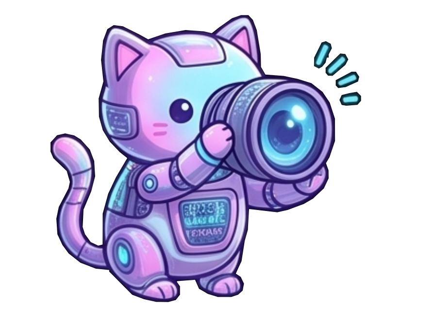
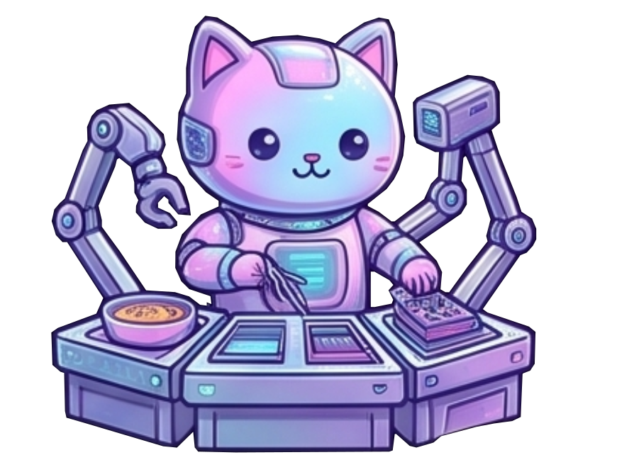
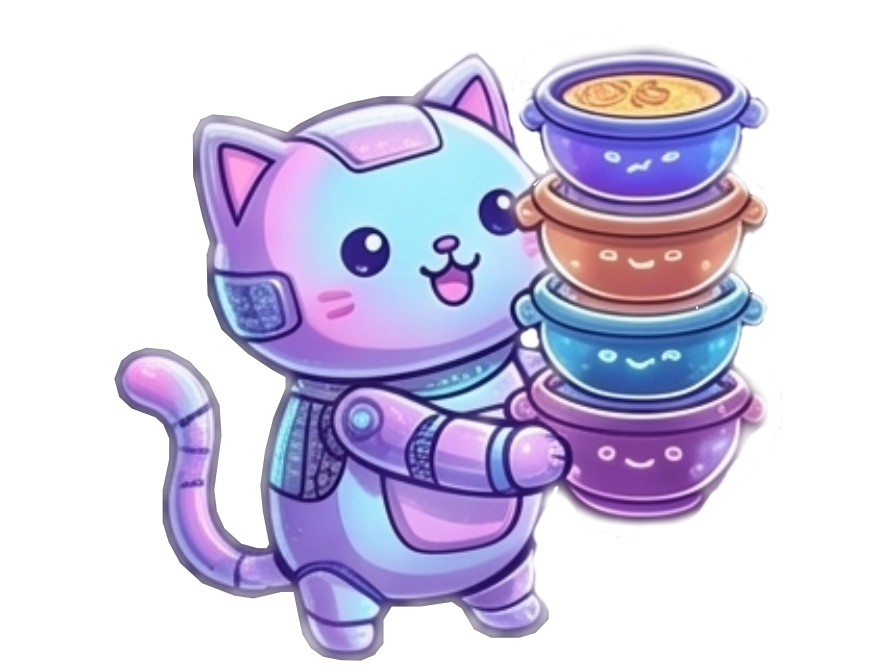
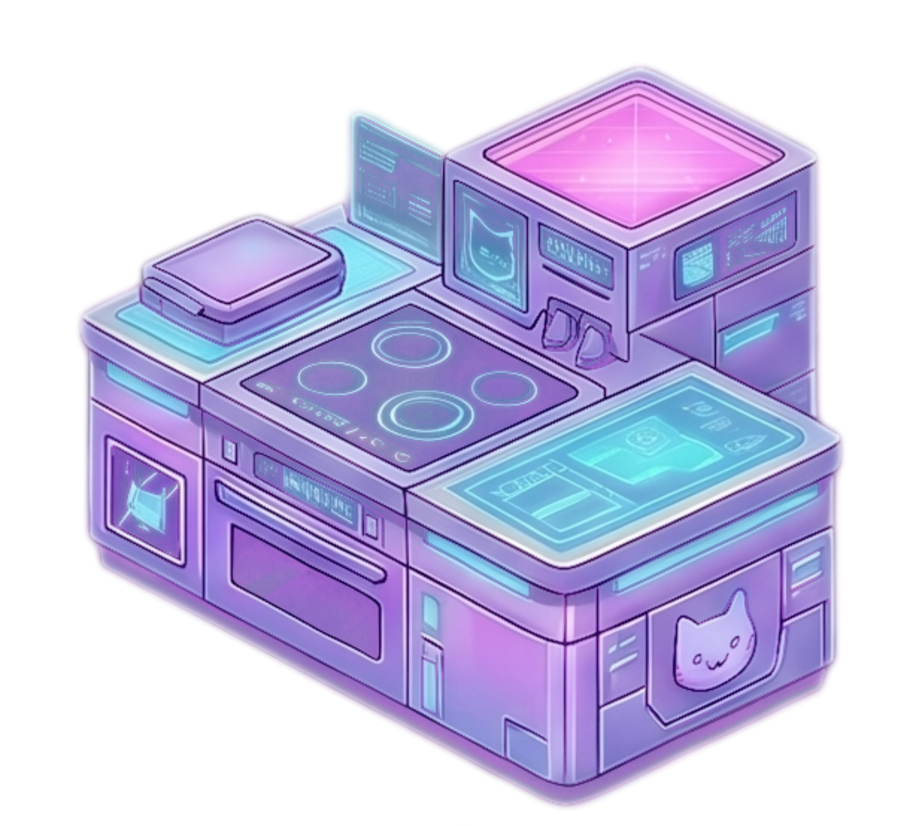
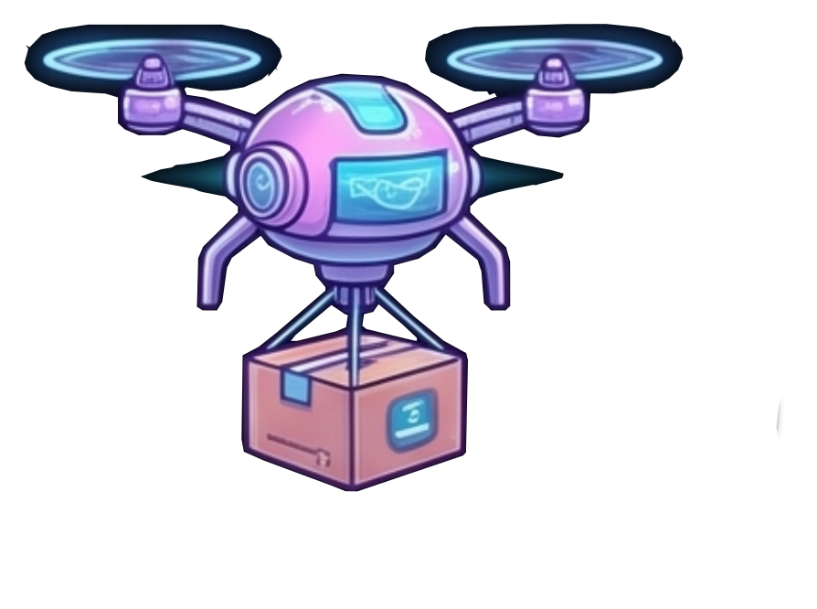
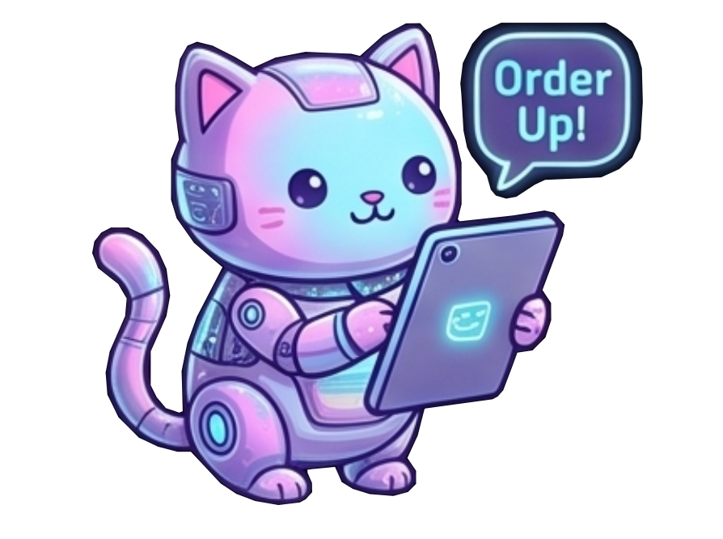
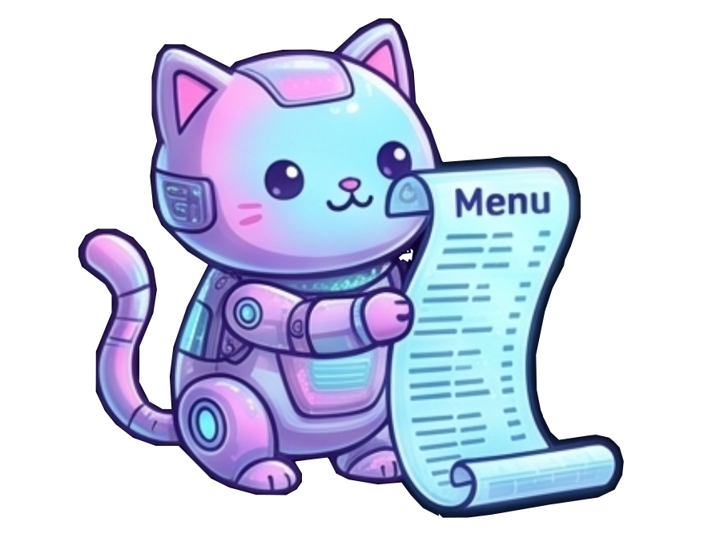
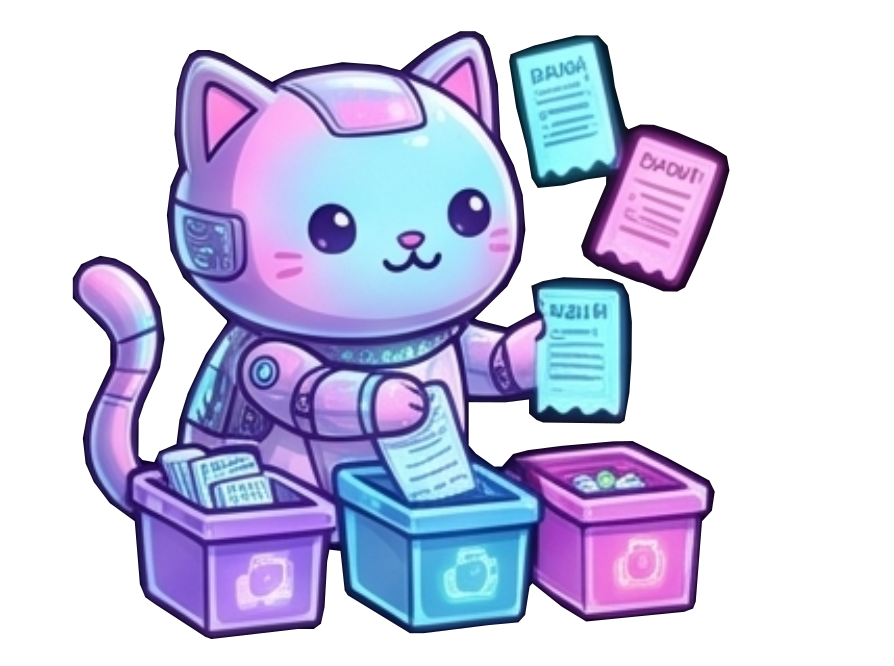
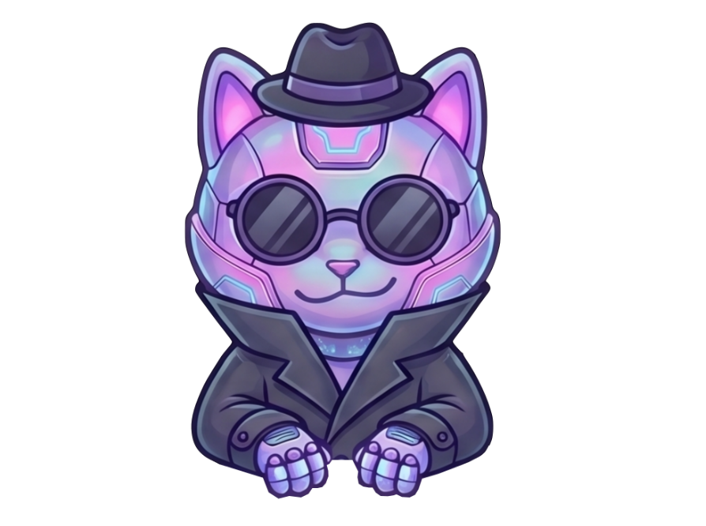

Audit before build
Inspectable wallet intents expose the recipe before the transaction exists.

NeonSoup is a non-siloed Cardano DEX for The Open, Composable, Globally-Shared P2P DeFi Kernel Protocol. Review full dApp intentions, build, review, sign, and submit your transactions in parallel and in bulk, entirely within your own wallet and device. Keep soup and kitchens where they always should have been: in your own hands.
NOW ALSO ON MAINNET FOR PIONEERS AND EARLY TESTING.
NeonSoup is for shared liquidity without exclusive kitchens, sealed dapp-built transactions, or hidden routing. The frontend suggests; your wallet executes.
Inspectable wallet intents expose the recipe before the transaction exists.

Your wallet, the frontend, and general-purpose APIs replace custom or centralized middle layers.

Open P2P UTxOs let frontends be forked or mirrored without splitting liquidity.

A DEX door, not a liquidity silo.
NeonSoup is an open source, easy-to-deploy DEX that reads live P2P DeFi Kernel offers, suggests routes locally, and hands open intents to your wallet for user-side audit, execution, and even last-mile self-sovereign overriding or forking.
A culture for a Cardano-powered DeFi where the user is in control.

Just the basics: trade and provide liquidity directly from your device, compose actions on a UTXO-powered cart, fight contention by becoming your own "batcher", and optionally avoid leaking your address history and balance online.
Route pay-and-receive swaps through live one-way offers. P2P, direct, no middlemen execution. (two-way comming next)

Open fixed-price offers and reclaim your own order UTxOs. Keep full spending, staking and governance rights over your liquidity.

Use a shopping cart experience to queue Fill, Offer, and Close actions for in-bulk, bundled or retryable execution. Split them among 1 or more transactions for parallel, or bundled submission.

Soup is tasty, others will try to get it before you. Use optional pay-up quotes on trades or use parallel transaction signing and submission when fast UTxO markets get crowded. You don't need to delegate sovereignty to get your soup. You are your own "batcher".

Trade without exposing your address, balance, or history with us. We don't force you to connect in order to swap or offer liquidity. Decide by yourself what to share, we respect your financial persona. Also we dismiss the javascript code injection from CIP-30 wallets to isolate contexts for your security.

By default until you decide to connect, you start trading on Incognito Mode for simplicity. Less obstacles to onboard users on first go.
NeonSoup protects users by making access inspectable, portable, and replaceable.
Open source DEX code, GCScript DSL intent library and general-purpose APIs keep liquidity reachable.
Ejectable UDC URLs and QR flows let users bypass NeonSoup frontends and execute, customize, fork or integrate elsewhere.
Wallet-built execution enforce deep user control over transactions, keys, stake credentials, and final submission. Direct user-wallet to Cardano interactions, no other exclusive middelmen in between.
We support CIP-30 browser extension wallets, mobile native CIP-30 wallets, Ledger and Trezor hardware wallets, seed phrase, QR, and burner wallets. Powered by GameChanger Wallet.
Cardano settles. P2P DeFi Kernel enforces. NeonSoup suggests. Your wallet executes.
Cardano eUTxOs are the on-chain P2P communication channel. They are the liquidity in the global shared order book.
The frontend reads chain data and suggests user-directed intents: Recipes for the user wallet to mix and self-serve their own soup.
The wallet receives the recipe, a UDC intent, and builds the transactions in bulk on your device.
Audit, build, verify, sign, submit, even customize. All from your own wallet. A trully self-serve kitchen.
A Public Alpha is available on Pre-Production Testnet and Mainnet as an MVP for pioneers, early testers and feedback.
Public Mainnet support exists because code is open source since day zero, we built it in public for Piece Of Pie Gimbalabs Hackathon, and P2P DeFi Kernel V1 smart contracts have 1 audit already, but do not consider NeonSoup production-ready. Is currently unstable, inneficient, and provided as-is. Use early at your own risk.
NOW ALSO ON MAINNET FOR PIONEERS AND EARLY TESTERS